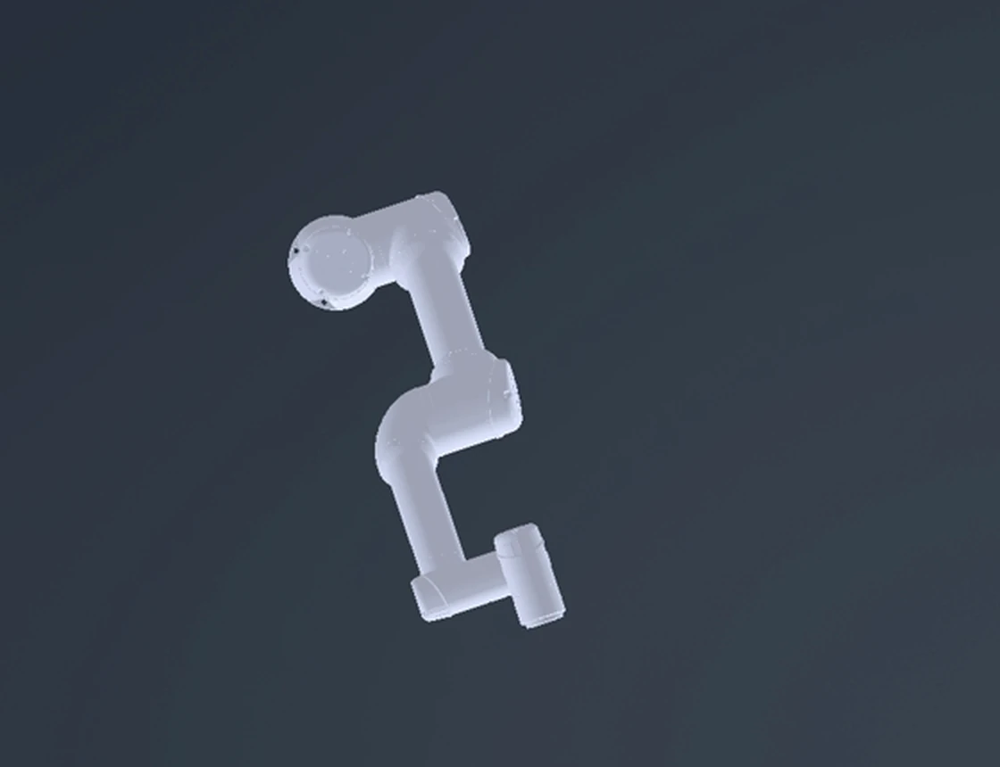
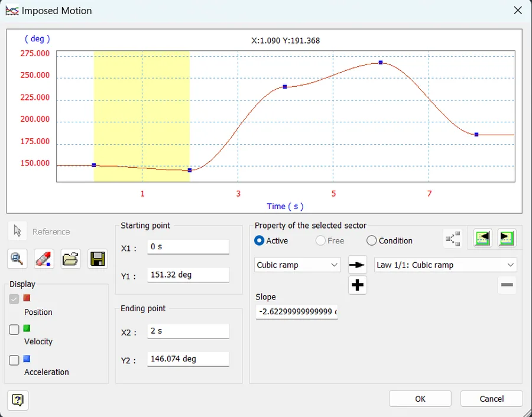
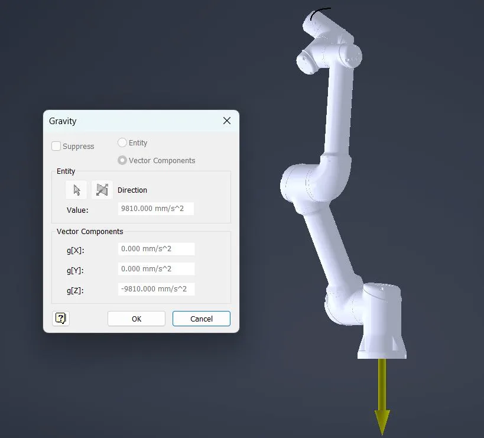
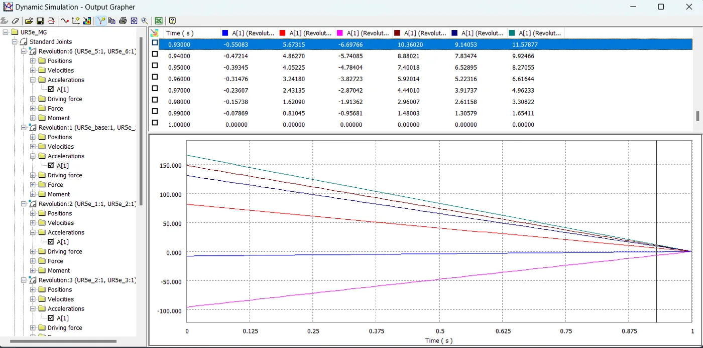
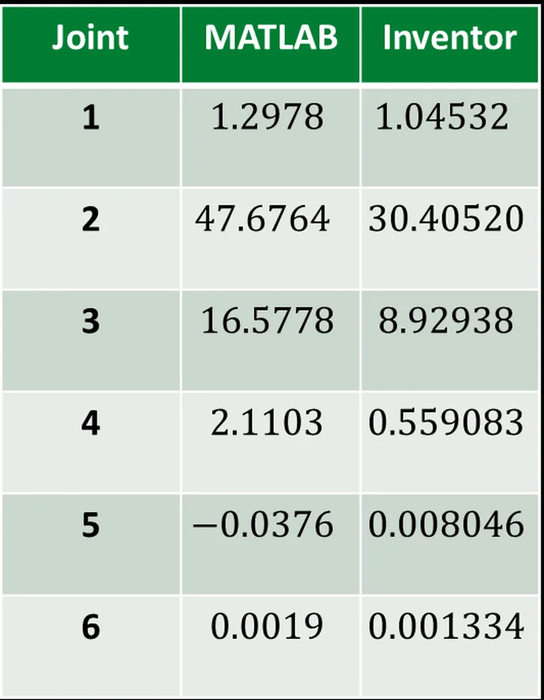

03 · Robotics · CAD dynamics
RoboLatte, UR5e Dynamic Simulation
Model a UR5e preparing a latte and work the task down to joint torques. The engineering question underneath it: does the same physical motion give comparable answers when it is modelled two different ways?

Headline result
The test was set in advance: do the two tools agree in sign and stay within the same order of magnitude? Five of the six joints clear that bar. Joint 3 does not, and it is the one outright failure. Joint 2 clears it but only just, differing by about 57 %. That makes this a screening comparison, not close agreement, and it is reported as one.
What the project was given
The task was fixed by the brief: pick up a cup, hold it under an espresso outlet, then under a milk dispenser, and serve. Five stations were laid out on the robot's circular reach envelope with explicit coordinates, and the UR5e was selected over an Omron TM5-900 and a FANUC CRX-5iA before any modelling started.
The motion was fixed too. An 8 s trajectory built from four 2 s segments, sampled at 50 ms, with the cup and latte together modelled as a payload of about 0.30 kg applied as 3 N downward at the end effector. The course model assumed a ± 50 N·m actuator envelope.
One given shapes the whole comparison. Universal Robots publishes a full inertia tensor only for Link 6, so the analytical model had to use generic diagonal inertia values for Links 1 to 5, while the CAD model used full geometry. The two models were never working from the same mass properties.
What the goal was
Not numerical agreement. The report states plainly that exact agreement is not expected between analytical inverse dynamics and a damped forward CAD simulation, so the standard set for the comparison was consistent sign and comparable order of magnitude, and whether peak torque demand sits inside the assumed actuator envelope.
No tolerance was defined in advance for how far apart the two tools were allowed to be.
What I did
I was primarily responsible for the Autodesk Inventor workstream. I built and constrained the UR5e assembly, defined imposed cubic ramp motions on all six revolute joints to match the planned trajectory, and configured the Dynamic Simulation environment: gravity as an explicit vector (g_z = −9810 mm/s²), CAD-derived link mass and inertia properties, and a 3 N end-effector payload for the cup and latte.
I then extracted joint driving forces from the Output Grapher at three instants and unit-converted them from N·mm to N·m so the two toolchains produced directly comparable quantities.
The MATLAB kinematics, trajectory and analytical inverse dynamics are my teammate's work.


What went wrong, and the fix
The two tools did not share a joint-angle convention. The same physical pose reads as a different set of joint angles in each, for example 151.32° in Inventor against 146.07° in MATLAB for one configuration. Until that is reconciled, putting the two torque columns side by side compares two different robot poses and the whole exercise is meaningless.
I derived an offset-based mapping between the conventions and applied it before any comparison was made. It is unglamorous alignment work, and it is the reason the numbers below can be read against each other at all. No trade-off was recorded for it.
What the result was
The comparison was judged on two things agreed before the numbers existed: matching sign, and agreement to within an order of magnitude. Five of the six joints clear both. Joint 3 does not, differing by nearly a factor of two, and it is the outright failure of the test.
Joint 2 is the awkward one. At t = 4 s my Inventor result is 30.4052 N·m against 47.6764 N·m from the analytical model. That is about 57 % apart, which technically stays inside an order of magnitude and so passes the stated bar, but it is far too wide to call agreement in any useful sense. I count it as a pass against the criterion and a warning against the conclusion.
Measured against the ± 50 N·m envelope assumed in the course model, the analytical peak of ≈ 47.7 N·m leaves very little nominal margin. Because the two models disagree materially, that reading is a screening comparison and not evidence of physical feasibility.


What was not overcome
Neither Joint 3's failure nor Joint 2's width has an established cause. Approximate link inertias, different gravity and payload handling between the two toolchains, and sampling only three instants are all plausible explanations, and no sensitivity study was run to isolate any of them. Naming one would be a guess, so both stay open.
Scope and limitations
- Simulation and CAD only. No physical UR5e, no sensors, no real latte. Nothing here was built or tested on a robot.
- This is not close agreement between the two tools, and it is not presented as such. Joint 3 differs by nearly a factor of two and fails the stated criterion outright. Joint 2 passes it at roughly 57 % apart (47.68 against 30.41 N·m), which is inside an order of magnitude but nowhere near agreement.
- Approximate link inertias, differing gravity and payload handling between the toolchains, and sampling only three instants are all candidate explanations. None was isolated by a sensitivity study.
- Against the ± 50 N·m envelope assumed in the course model, the MATLAB peak of ≈ 47.7 N·m leaves little nominal margin. Because the two models disagree materially, this is a screening comparison, not evidence of physical feasibility.
- Force sensing was specified as a proposal only. No sensor was integrated or calibrated.